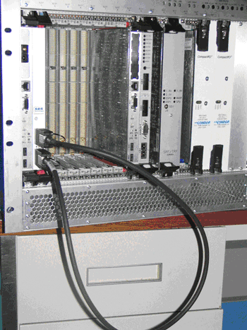
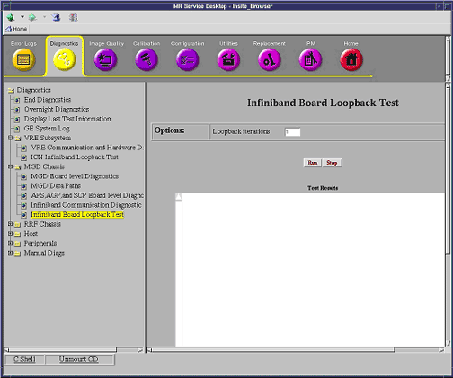
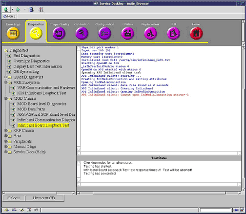

Proprietary to General Electric Company
Direction 5670006, Rev# 1
Discovery MR750w GEM Service Methods
Module Version 2.0, Version Date 9/20/10
Proprietary to General Electric Company |
Diagnostics >> MGD Chassis
This diagnostic verifies the MGD Infiniband board by sending data between its ports over Infiniband. Since the hardware is not capable of being configured for this through software, it is necessary to disconnect the Infiniband data cables and connect an Infiniband Loopback cable to physically connect the ports together.
Table 1: Purpose of Loopback Test
| Capability | What It Does | When to Use |
| Infiniband Board Loopback Test | Tests the stand-alone Infiniband board. | If Infiniband communications diagnostic reports a failure. |
Infiniband board in MGD chassis
Table 2: Equipment Required
| Item | Quantity | Part Number |
| Infiniband Loopback Cable | 1 | 5146975-8 |
| ||||
| ELECTROCUTION HAZARD! | ||||
| DANGEROUS VOLTAGES ARE PRESENT THROUGH OUT THE SYSTEM CABINET WHEN POWER IS APPLIED. | ||||
| Refer to System Cabinet LOTO. |
Remove the Infiniband data cables from the front of the MGD Infiniband board.
Connect the Infiniband Loopback cable as shown below.
Illustration 1: Connecting Infiniband Loopback Cable

Verify that the green LED next to each port is On and the yellow LEDs are Off.
Click the Insite browser’s Diagnostics tab, and select MGD Chassis > Infiniband Board Loopback Test. The screen below will display.
Illustration 2: Infiniband Board Loopback Screen

Click [Run]. The yellow LEDs next to each port turn On.
| NOTE: | Once [Run] is selected, do not click anywhere else on the Common Service Desktop until the test is completed. To abort the test prior to its completion, click [Stop]. |
Wait for the test to complete.
Illustration 3: Infiniband Diagnostics Completed

Remove the Infiniband Loopback cable.
Restore the original Infiniband data cable connections to the Infiniband board.
Perform a TPS Reset.
Review the error log and corresponding extended error messages for subsequent actions. Additional responses to the diagnostic’s results are as follows:
Table 3: Problem/Solution for Diagnostic Results
| Fault | Problem Description | GE Field Action |
| Both green LEDs do not illuminate when cable is connected. |
|
|
| Yellow LEDs do not illuminate when test starts. |
|
|
| Test fails. |
|
|
After exiting from Diagnostics, perform a scan to verify system is operating properly.